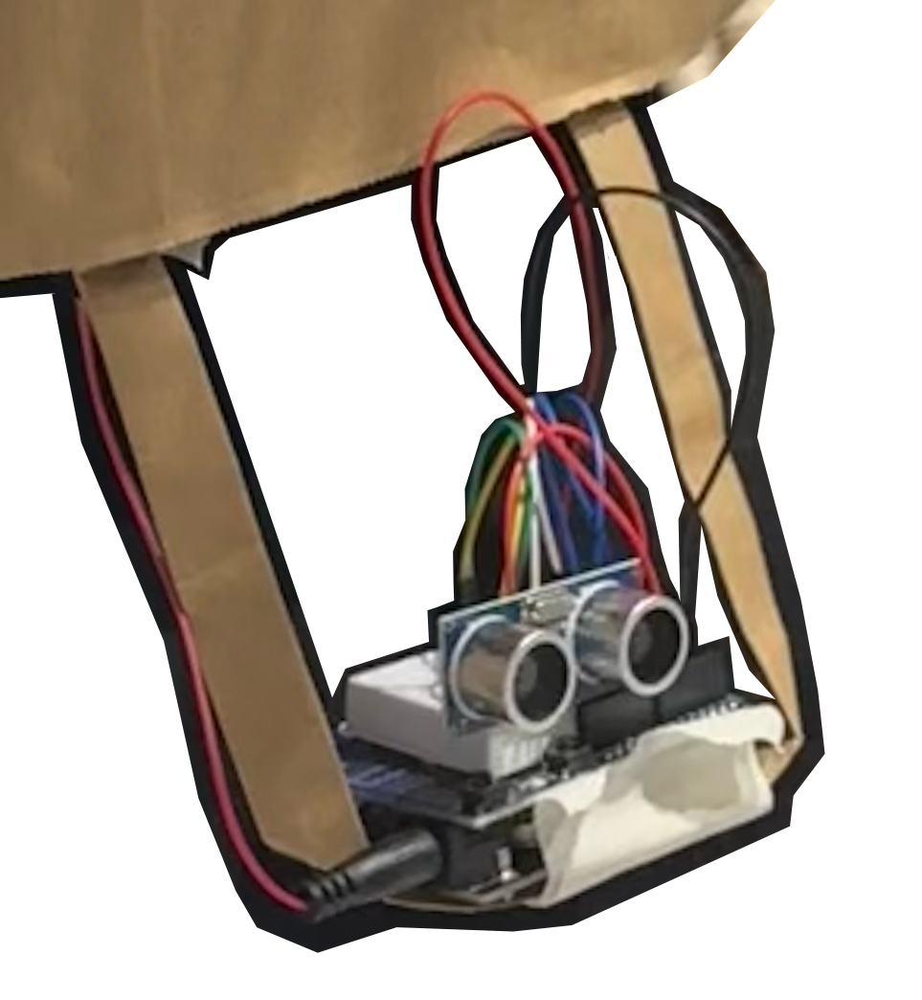
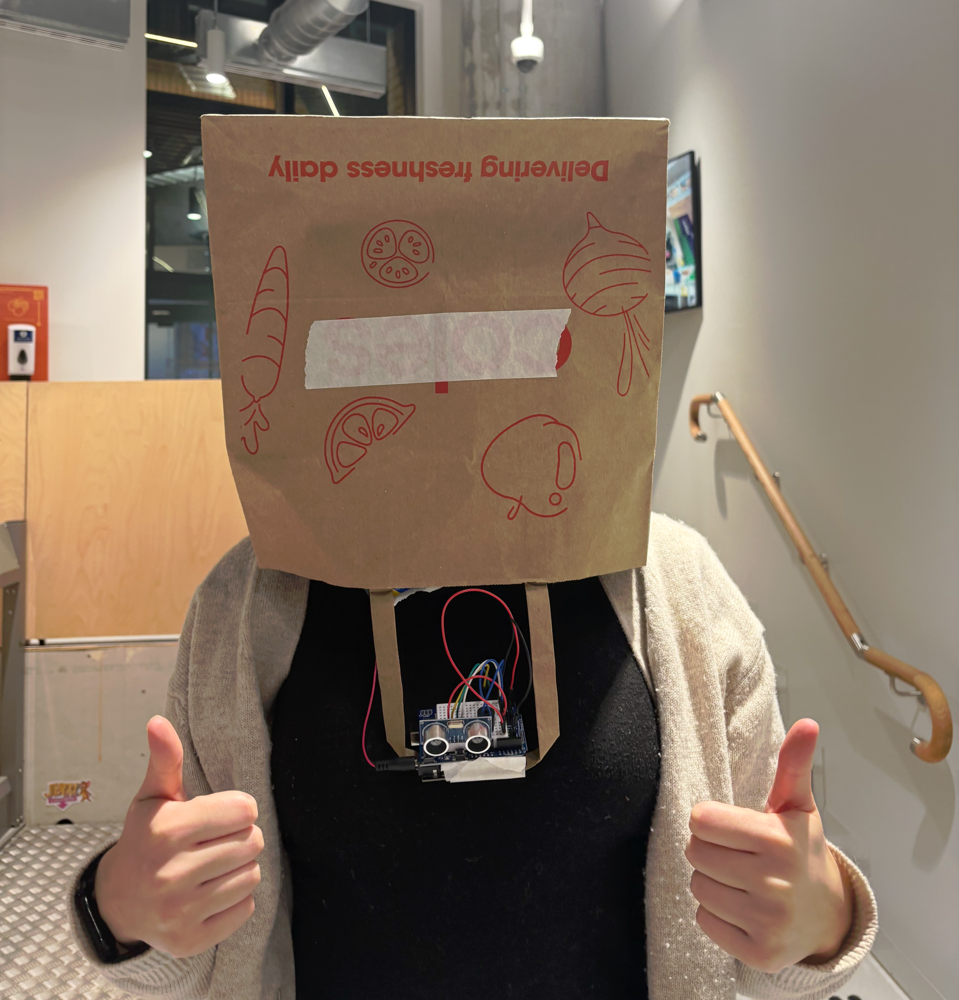

back
After the theramin experiment, we moved onto another sensor type: The Supersonic sensor. This time around went alot quicker on the setup - I had a better understanding of how the breadboard and ardunio system worked, and we got the supersonic sensor to work relatively quickly.
In this activity, we used the prototype Arduino extension to create our supersonic-setup. We chose to do this partly because I felt that it would be more effective to use a smaller circut to attach to the paper bag, and that I simply just wanted to try it out. It worked well putting it into practice - We decided to add the ardunio to the bag strap so it sat closer to the body and could sense more possible colision points that placing the sensor on top or on the middle of the bag. I think this was effective, as trialling the sensor went well and it reacted to big objects in our way, although, through the nature of this setup, anything waist below (which is alot of objects in the telstra creator space) were not in the sensor's range and therefore still a threat.
Overall, I found this activity really interesting think about in relation to other ways arudino systems can be used in practicality. Like the Eyerwriter (Shown in the workshop slides before this activity), I'm interested to learn more about ways physical computing is being used to act as replacements for our senses.
